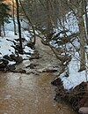

meltwater
matter

Source: Wikipedia
Wikipedia Page (Something wrong with this association? Let us know.)
Wikidata Page (Something wrong with this association? Let us know.)
Occurs in:
- glacier_ice_meltwater__domain_time_integral_of_volume_flux
- glacier_ice_meltwater__mass_flux
- glacier_ice_meltwater__volume_flux
- glacier_ice_meltwater__domain_time_integral_of_volume_flux
- glacier_ice_meltwater__mass_flux
- glacier_ice_meltwater__volume_flux
- sea_ice_meltwater__mass_flux
- sea_ice_meltwater__volume_flux
- snowpack_meltwater__domain_time_integral_of_volume_flux
- snowpack_meltwater__mass_flux
- snowpack_meltwater__volume_flux
- snowpack_meltwater__mass_flux
- snowpack_meltwater__volume_flux
- land_surface_snow_meltwater__time_integral_of_mass_flux